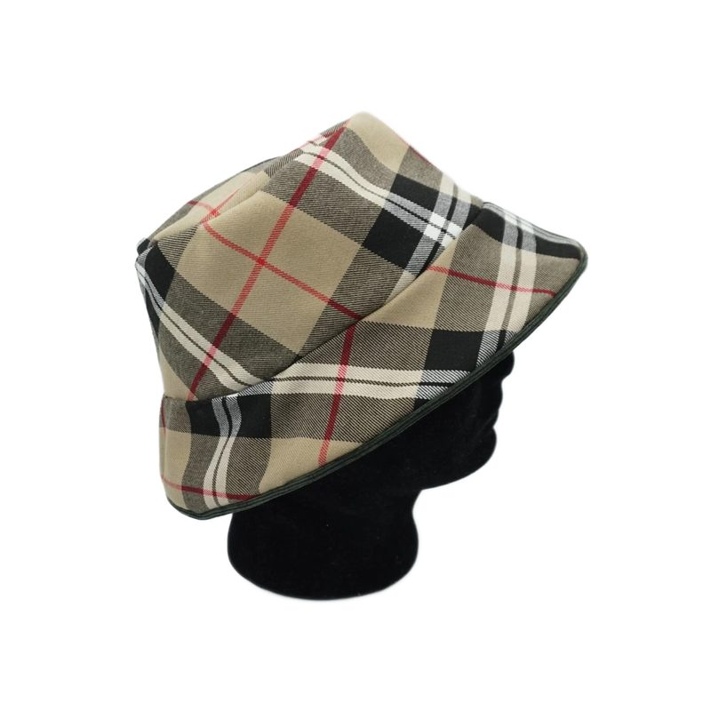

Trois modèles de chapeaux, tous sur mesure. Du plus simple au plus élaboré.

Réversible, en 1 ou 2 pièces.
Difficulté●●○○
Créer un bob
6 ou 8 pétales : le béret classique.
Créer un béret à pétales
Centré ou asymétrique, avec un bandeau en deux bandes.
Créer un béret basque